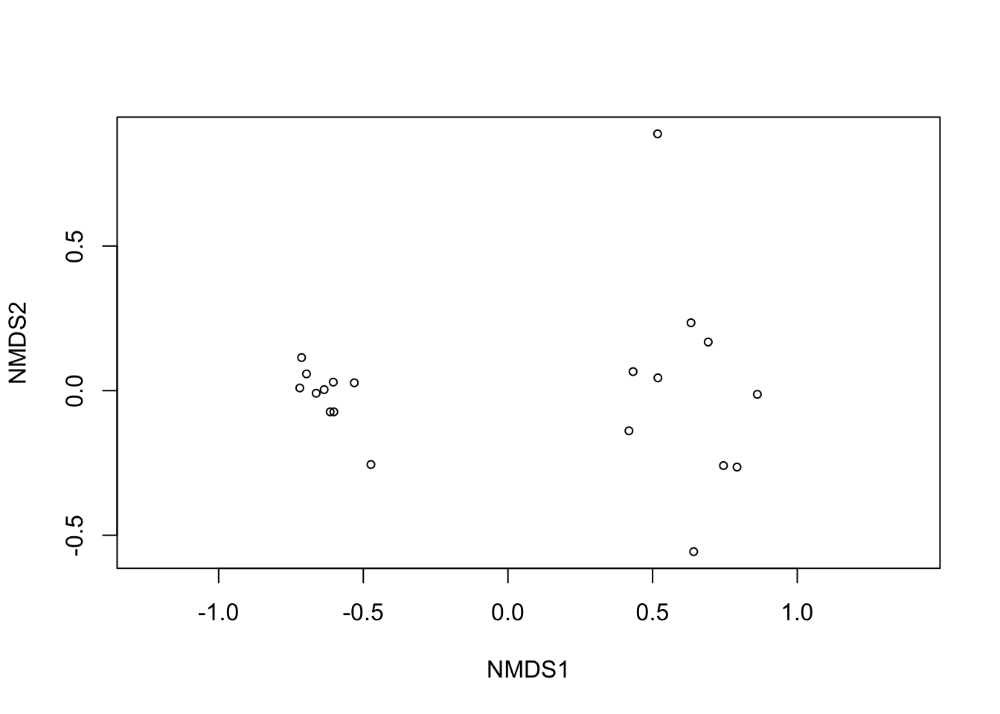
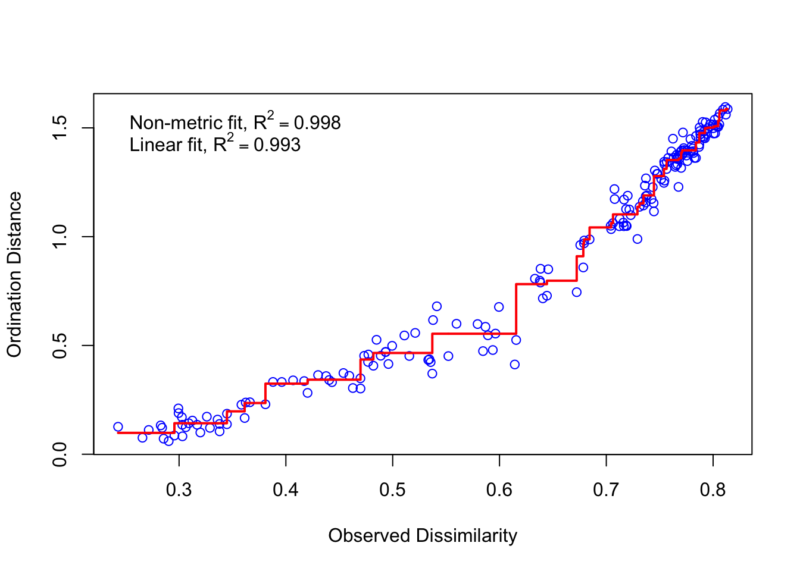
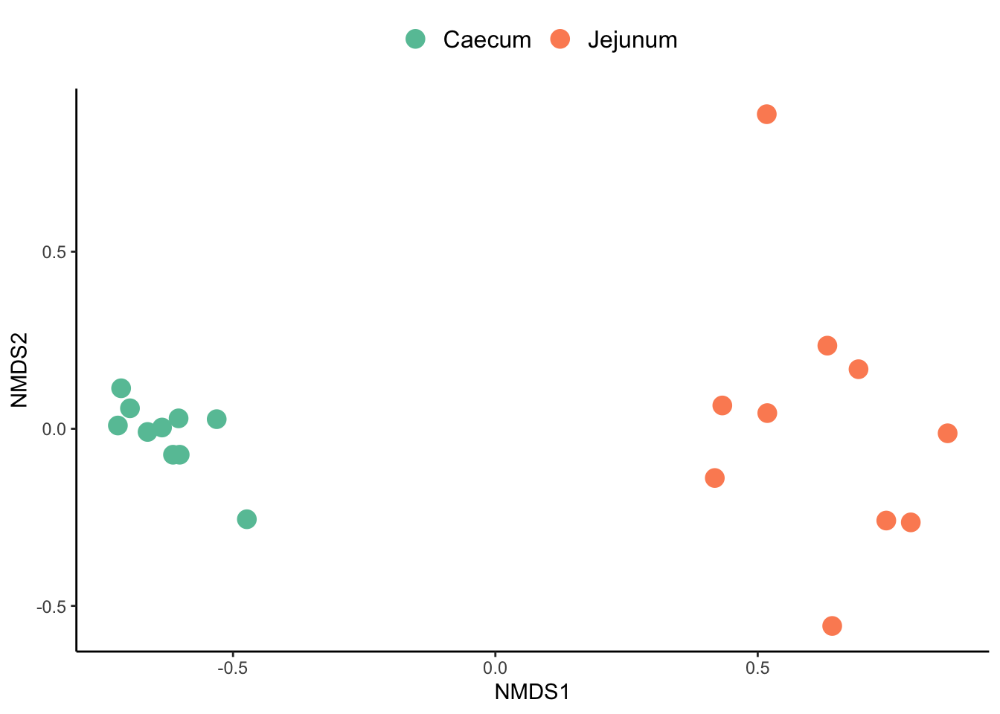

# libraries ----------------------
library(tidyverse)
library(vegan)
# data------------------
df_proteins <- read_tsv("../../project/rawdata/final_proteins.tsv")
metadata <- read.table(file = "../../project/rawdata/metadata_metapro.txt",
header = TRUE,
sep = "\t",
check.names = FALSE)Ordination analysis
This tutorial would describe how to perform a Non-metric MultiDimensional Scaling (NMDS) ordination analysis, based on the total protein groups identified in a metaproteomics experiment. NMDS is a distance-based ordination technique, which summarizes the differences or similarities between each pair of sample using any number of response variables. This technique is broadly use in Microbial ecology and metagenomic, metatrascriptomics, metaproteomics and metabolomic analysis. For more details on ordiantion analysis please read Multivariate analyses in microbial ecology and PCoA & NMDS.
For the following analysis we require two data frames 1) metadata describing each sample metadata_metapro.txt and 2) the intensity of the different protein groups across the samples final_proteins.tsv. The protein groups data frame was obtained running a set of metaproteomic raw files in the iMetaLab software.
Set up working space and load data
Cleaning metadata
First we need to clean our metadata. This specific dataframe has some issues that can create noise during the analysis:
- Bad variable naming
- The variable
rawfilescontain dots (.) - The variable
Abschnittcontains spaces and correspond to more than one variable.
We can solve this problems: 1) first renaming the variables using the function rename(), 2) then we can replace the dots (.) for underscores using the functions mutate() and str_replace(), and finally 3) we can separate the variable section into two new variables using the function separate().
metadata <- read.table(file = "../../project/rawdata/metadata_metapro.txt",
header = TRUE,
sep = "\t",
check.names = FALSE) %>%
rename(rawfile=Probenname, section=Abschnitt) %>%
mutate(rawfile = str_replace(rawfile, "\\.", "_")) %>%
separate(section,
into = c("section", "origin"),
sep = "\\s")
metadata[1:5,] rawfile section origin
1 9_1 Stomach Digesta
2 9_3 Stomach Mucosa
3 9_4 Stomach Mucosa
4 9_5 Stomach Mucosa
5 9_6 Duodenum DigestaCalculate protein relative abundance
rel_abundance_df <- df_proteins %>%
rename(proteinid = `Protein IDs`) %>%
select(proteinid, contains("Intensity"), -Intensity) %>%
pivot_longer(-proteinid, names_to = "rawfile", values_to = "intensity") %>%
mutate(intensity = as.numeric(intensity),
rawfile = str_remove(rawfile, "Intensity ")) %>%
group_by(rawfile) %>%
mutate(rel_abundance = 100*(intensity/sum(intensity))) %>%
select(proteinid, rawfile, rel_abundance) %>%
pivot_wider(names_from = rawfile, values_from = rel_abundance)Transform the Protein groups data frame
# Create a matrix and transpose data--------------
matrix <- rel_abundance_df[2:21] %>%
t()Non-metric MultiDimensional Scaling (NMDS)
#Calculate distance -----------------
nmds1 <- metaMDS(matrix, #perform nmds
distance = "bray",
try = 20,
trymax = 100,
maxit = 1000,
k = 3)Run 0 stress 0.0393017
Run 1 stress 0.03930164
... New best solution
... Procrustes: rmse 0.000159104 max resid 0.0003476246
... Similar to previous best
Run 2 stress 0.04066654
Run 3 stress 0.03930173
... Procrustes: rmse 0.0001697639 max resid 0.0003891454
... Similar to previous best
Run 4 stress 0.05920848
Run 5 stress 0.05922803
Run 6 stress 0.1882621
Run 7 stress 0.04063187
Run 8 stress 0.04066681
Run 9 stress 0.0425669
Run 10 stress 0.04066647
Run 11 stress 0.04063228
Run 12 stress 0.03930165
... Procrustes: rmse 0.0001042094 max resid 0.00020394
... Similar to previous best
Run 13 stress 0.04063213
Run 14 stress 0.04063194
Run 15 stress 0.04063198
Run 16 stress 0.03930161
... New best solution
... Procrustes: rmse 3.433133e-05 max resid 7.765347e-05
... Similar to previous best
Run 17 stress 0.04063211
Run 18 stress 0.04063201
Run 19 stress 0.04066651
Run 20 stress 0.03980541
*** Best solution repeated 1 timesCheck the ordination analysis
Using some vegan functions we can check the raw plot of our ordination and how good the analysis fot to our data. It is recommended that the stress of the analysis is lower than 0.2
# qc checking
ordiplot(nmds1, display = "sites")
nmds1$stress [1] 0.03930161stressplot(nmds1)
Large scatter around the line suggests that original dissimilarities are not well preserved in the reduced number of dimensions. Looks pretty good in this case
Extract the NDMS scores
We need to extract the scores from the NMDS and combined them with the metadata. In this way we can label each of our samples based on their metadata.
#Extracting scores
data_scores <- as.data.frame(scores(nmds1, display=c("sites")))
#Addd metadata to dataframe
data_scores$rawfile <- as.character(row.names(data_scores))
#joing metadata with nmds scorres
data_nmds <- left_join(data_scores, metadata, by = "rawfile")
data_nmds$section <- factor(data_nmds$section,
levels = c("Caecum", "Jejunum"))#Extracting scoresCreate a plot with ggplot
data_nmds %>%
ggplot() +
geom_point(aes(x = NMDS1,
y = NMDS2,
colour =section),
size = 4
#alpha = 0.7
) +
scale_color_manual(values = c('#66C2A5','#FC8D62')) +
theme_classic() +
theme(panel.background = element_blank(), #remove background
panel.grid.major = element_blank(), #remove grid
panel.grid.minor = element_blank(),#remove grid
legend.title = element_blank(),
legend.text = element_text(size=12),
legend.position = "top") #remove legend title